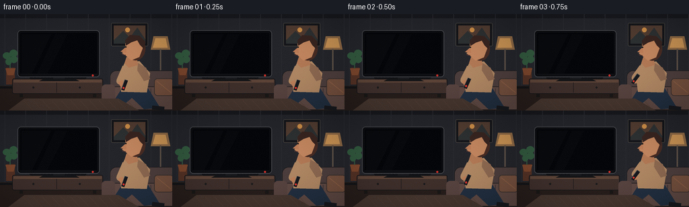
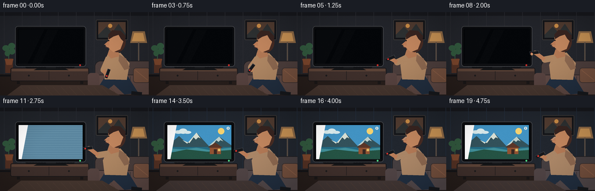

CODING AGENTS AS PIXEL WORLD MODELS
traex/GPT-5.6-Sol · motion_rationality_0044
点击播放 · 原生 RGB 像素
逐轮保存的候选
回放视频、检查图与代码变化。
每份候选均可单独播放。实际图片检查记录在下方工具轨迹中。
候选 01播放与检查图
点击播放 · 原生 RGB 像素


展开代码变化
--- 上一保存版本
+++ 本次保存版本
@@ -0,0 +1,229 @@
+from pathlib import Path
+import math
+import numpy as np
+from PIL import Image, ImageDraw, ImageFilter
+import artifact_io
+
+W,H,N = 256,144,20
+S=4
+rng=np.random.default_rng(17)
+
+def sc(v): return int(round(v*S))
+def box(b): return tuple(sc(v) for v in b)
+def poly(p): return [(sc(x),sc(y)) for x,y in p]
+def ease(x):
+ x=max(0,min(1,x)); return x*x*(3-2*x)
+def mix(a,b,t): return tuple(int(a[i]*(1-t)+b[i]*t) for i in range(3))
+
+def line(d, pts, fill, width):
+ d.line(poly(pts), fill=fill, width=sc(width), joint='curve')
+
+def roundrect(d,b,r,fill,outline=None,width=1):
+ d.rounded_rectangle(box(b),radius=sc(r),fill=fill,outline=outline,width=sc(width))
+
+def ellipse(d,b,fill,outline=None,width=1):
+ d.ellipse(box(b),fill=fill,outline=outline,width=sc(width))
+
+def add_gradient(im, on):
+ # warm wall gradient and cool TV cast after power-on
+ arr=np.asarray(im).astype(np.float32)
+ yy,xx=np.mgrid[0:H*S,0:W*S]
+ warm=np.clip(1-yy/(H*S),0,1)[...,None]
+ arr += warm*np.array([5,3,0])[None,None,:]
+ if on>0:
+ dist=((xx/S-104)/133)**2+((yy/S-74)/80)**2
+ glow=np.exp(-dist*2.0)[...,None]*on
+ arr += glow*np.array([1,7,17])[None,None,:]
+ return Image.fromarray(np.clip(arr,0,255).astype(np.uint8),'RGB')
+
+def draw_room(d, cool):
+ # wall, ceiling shadow, floor
+ d.rectangle(box((0,0,W,108)),fill=mix((35,37,43),(31,40,53),cool*.35))
+ d.rectangle(box((0,0,W,6)),fill=(24,25,30))
+ d.rectangle(box((0,107,W,H)),fill=(39,30,27))
+ d.rectangle(box((0,108,W,111)),fill=(20,20,23))
+ # geometric wall panels
+ for x in range(7,256,31):
+ d.line([(sc(x),0),(sc(x),sc(107))], fill=mix((42,43,49),(35,45,59),cool), width=sc(1))
+ # framed art
+ roundrect(d,(165,13,220,48),2,(20,21,25),(65,61,58),1)
+ d.rectangle(box((169,17,216,44)),fill=(80,59,48))
+ d.polygon(poly([(169,39),(183,25),(193,35),(204,20),(216,38),(216,44),(169,44)]),fill=(45,48,49))
+ ellipse(d,(186,20,193,27),(201,139,70))
+ # standing lamp warm, right rear
+ d.polygon(poly([(228,33),(249,33),(253,53),(224,53)]),fill=(139,103,68))
+ d.polygon(poly([(231,36),(246,36),(249,50),(227,50)]),fill=(197,144,83))
+ d.rectangle(box((237.5,52,239.5,112)),fill=(91,79,70))
+ ellipse(d,(229,110,248,113),(80,66,58))
+ # plant on far left
+ d.rectangle(box((9,80,22,105)),fill=(83,49,36))
+ d.polygon(poly([(8,81),(23,81),(20,91),(11,91)]),fill=(121,69,44))
+ line(d,[(15,81),(15,59)],(53,84,62),1.5)
+ for b in [(4,57,16,67),(14,53,26,64),(8,66,17,76),(15,62,26,73)]:
+ ellipse(d,b,(49,87,61))
+ # low media console
+ roundrect(d,(18,96,153,119),3,(62,47,43),(23,22,24),1)
+ d.rectangle(box((20,98,151,102)),fill=(92,67,55))
+ d.line(poly([(84,102),(84,117)]),fill=(36,31,31),width=sc(1))
+ ellipse(d,(48,108,51,111),(28,27,28)); ellipse(d,(117,108,120,111),(28,27,28))
+ d.rectangle(box((29,119,34,124)),fill=(26,23,23)); d.rectangle(box((138,119,143,124)),fill=(26,23,23))
+ # slim soundbar
+ roundrect(d,(44,92,128,97),2,(18,19,22))
+ for x in range(49,125,5): ellipse(d,(x,93.2,x+1.2,94.4),(44,45,48))
+
+def draw_tv(d, frame, power):
+ # stem and set
+ d.rectangle(box((79,91,96,97)),fill=(26,27,30))
+ d.polygon(poly([(64,97),(112,97),(118,100),(58,100)]),fill=(20,21,23))
+ # outer bezel shadow
+ roundrect(d,(26,24,148,94),5,(12,13,16),(70,72,76),1)
+ roundrect(d,(30,28,144,91),2,(4,6,9))
+ # screen stages
+ if power < .05:
+ # subtle off-screen reflection
+ d.polygon(poly([(32,30),(76,30),(47,89),(32,89)]),fill=(8,10,13))
+ d.polygon(poly([(82,30),(100,30),(70,89),(55,89)]),fill=(7,9,12))
+ elif frame==9:
+ d.rectangle(box((32,30,142,89)),fill=(2,3,5))
+ ellipse(d,(84,57,90,63),(155,205,230))
+ ellipse(d,(86,59,88,61),(255,255,255))
+ elif frame==10:
+ d.rectangle(box((32,30,142,89)),fill=(3,5,8))
+ # CRT-like expanding line
+ d.rectangle(box((46,58.5,129,61.5)),fill=(127,196,225))
+ d.rectangle(box((60,59.2,116,60.8)),fill=(231,250,255))
+ elif frame==11:
+ d.rectangle(box((32,30,142,89)),fill=(91,134,159))
+ for y in range(31,89,4):
+ d.line(poly([(32,y),(142,y)]),fill=(110,153,175),width=sc(.5))
+ else:
+ # bright nature/travel programme: blue sky, mountains, lake
+ d.rectangle(box((32,30,142,89)),fill=(66,147,195))
+ # sun and clouds
+ ellipse(d,(119,35,130,46),(244,209,112))
+ ellipse(d,(44,39,58,45),(215,233,235)); ellipse(d,(52,36,66,45),(221,238,239)); ellipse(d,(60,40,73,45),(215,232,235))
+ d.polygon(poly([(32,66),(52,49),(66,62),(82,43),(103,66),(121,50),(142,65),(142,75),(32,75)]),fill=(51,82,91))
+ d.polygon(poly([(58,56),(66,62),(82,43),(89,53),(85,51),(81,55),(77,51),(70,61)]),fill=(214,222,211))
+ d.polygon(poly([(103,66),(121,50),(128,58),(123,56),(120,59),(116,56),(111,63)]),fill=(189,207,202))
+ d.rectangle(box((32,68,142,89)),fill=(35,106,130))
+ d.polygon(poly([(32,70),(59,72),(82,69),(104,73),(142,69),(142,76),(32,76)]),fill=(65,143,153))
+ # shore and cabin
+ d.polygon(poly([(32,79),(65,72),(101,76),(142,73),(142,89),(32,89)]),fill=(37,83,68))
+ d.rectangle(box((105,68,124,80)),fill=(145,83,51)); d.polygon(poly([(102,69),(114,60),(127,69)]),fill=(91,54,40))
+ d.rectangle(box((112,72,117,80)),fill=(55,40,35)); d.rectangle(box((119,71,123,75)),fill=(226,190,104))
+ # channel bug
+ ellipse(d,(134,33,139,38),(238,238,231)); d.rectangle(box((136,34,137,37)),fill=(67,143,190))
+ # faint screen reflections/highlight
+ if power>.4 and frame>=11:
+ d.polygon(poly([(32,30),(48,30),(37,89),(32,89)]),fill=(255,255,255,))
+ # bottom bezel and indicator
+ d.rectangle(box((30,89,144,91)),fill=(16,17,20))
+ led=(75,220,133) if frame>=9 else (203,48,42)
+ ellipse(d,(136.2,90,139.2,93),led)
+
+def draw_sofa(d,cool):
+ # couch behind person
+ roundrect(d,(163,84,270,137),10,mix((75,61,59),(62,65,72),cool*.4),(31,29,31),1)
+ roundrect(d,(158,108,267,143),8,mix((94,72,67),(71,73,82),cool*.5),(38,33,34),1)
+ d.line(poly([(224,111),(224,139)]),fill=(54,49,52),width=sc(1))
+ roundrect(d,(151,105,171,139),6,mix((86,66,63),(69,70,77),cool*.4))
+ # cushion
+ roundrect(d,(229,96,258,122),5,(115,79,61),(55,46,45),1)
+ line(d,[(233,100),(254,117)],(136,92,68),1)
+
+def draw_person(d, frame, lift, cool):
+ # subtle breathing and head settling
+ breath=math.sin(frame*.65)*0.45
+ # seated lower body
+ d.polygon(poly([(190,111),(220,111),(238,140),(214,142),(196,125),(178,140),(163,139),(181,111)]),fill=(34,47,64))
+ line(d,[(226,139),(244,141)],(24,26,30),6)
+ # torso, cream pullover
+ torso=mix((173,133,98),(158,135,115),cool*.25)
+ d.polygon(poly([(185,73+breath),(207,70+breath),(223,88),(218,117),(180,116),(177,91)]),fill=torso)
+ d.polygon(poly([(205,73),(217,80),(223,97),(214,100),(204,84)]),fill=(139,103,79))
+ # neck
+ d.polygon(poly([(188,64),(203,64),(205,76),(191,80),(185,73)]),fill=(176,119,84))
+ # head/profile looking toward TV
+ hy=52+breath
+ # ear/hair silhouette behind
+ ellipse(d,(187,34+breath,216,69+breath),(70,43,35))
+ # face with left-facing nose
+ d.polygon(poly([(191,37+breath),(208,38+breath),(213,48+breath),(207,64+breath),(195,69+breath),(187,62+breath),(181,58+breath),(187,54+breath),(186,44+breath)]),fill=(191,132,93))
+ # hair cap
+ d.polygon(poly([(187,47+breath),(186,39+breath),(193,31+breath),(207,32+breath),(216,41+breath),(214,52+breath),(208,46+breath),(204,39+breath),(195,42+breath)]),fill=(55,36,32))
+ # nose bridge and eye
+ d.polygon(poly([(187,49+breath),(179,56+breath),(188,58+breath)]),fill=(185,122,86))
+ ellipse(d,(186,48+breath,188,50+breath),(28,25,24))
+ d.line(poly([(181.5,60+breath),(187,61+breath)]),fill=(106,60,52),width=sc(1))
+ # arm path. shoulder fixed, elbow and hand interpolate to raised pointing pose
+ shoulder=(187,79+breath)
+ elbow=(178*(1-lift)+169*lift, 100*(1-lift)+82*lift)
+ hand=(184*(1-lift)+153*lift, 110*(1-lift)+70*lift)
+ # back upper arm sleeve then forearm skin
+ line(d,[shoulder,elbow],torso,11)
+ ellipse(d,(elbow[0]-5,elbow[1]-5,elbow[0]+5,elbow[1]+5),torso)
+ line(d,[elbow,hand],(184,124,88),7)
+ ellipse(d,(hand[0]-4,hand[1]-3.5,hand[0]+4,hand[1]+3.5),(190,130,91))
+ # remote rotated according to path vector, pointing left when raised
+ # remote center ahead of hand
+ ang0=math.radians(-70*(1-lift)+(-7)*lift)
+ cx=hand[0]-2.0*lift+1*(1-lift); cy=hand[1]-4*(1-lift)
+ length=16; wid=5
+ ux,uy=math.cos(ang0),math.sin(ang0); vx,vy=-uy,ux
+ corners=[]
+ for a,b in [(-length/2,-wid/2),(length/2,-wid/2),(length/2,wid/2),(-length/2,wid/2)]:
+ corners.append((cx+a*ux+b*vx,cy+a*uy+b*vy))
+ d.polygon(poly(corners),fill=(22,24,28))
+ line(d,[corners[0],corners[1],corners[2]],(69,72,76),.7)
+ # red power button toward TV end (-ux)
+ bx=cx-length*.27*ux; by=cy-length*.27*uy
+ pressed = 1 if 7<=frame<=9 else 0
+ ellipse(d,(bx-1.4,by-1.4+pressed*.5,bx+1.4,by+1.4+pressed*.5),(225,52,47))
+ # thumb rests over button during act
+ if frame>=6 and frame<=10:
+ tx=bx+1.8*vx; ty=by+1.8*vy
+ ellipse(d,(tx-2,ty-2,tx+2.2,ty+2.2),(202,143,101))
+ # tiny cool highlight on face after television lights
+ if cool>.1:
+ d.line(poly([(182,56+breath),(188,50+breath)]),fill=mix((191,132,93),(128,188,216),cool*.45),width=sc(1))
+
+def render(i):
+ # lift remote over first 2 seconds; lower gently after successful power-on
+ if i<=7: lift=ease((i-1)/6)
+ elif i<=11: lift=1.0
+ else: lift=1-.32*ease((i-11)/8)
+ power=ease((i-9)/3)
+ cool=ease((i-10)/4)
+ im=Image.new('RGB',(W*S,H*S),(34,36,42)); d=ImageDraw.Draw(im)
+ draw_room(d,cool)
+ # broad TV cast painted before furniture/person
+ if cool>0:
+ overlay=Image.new('RGBA',im.size,(0,0,0,0)); od=ImageDraw.Draw(overlay)
+ od.polygon(poly([(31,30),(144,30),(255,7),(255,143),(144,89),(31,89)]),fill=(43,132,188,int(24*cool)))
+ overlay=overlay.filter(ImageFilter.GaussianBlur(sc(14)))
+ im=Image.alpha_composite(im.convert('RGBA'),overlay).convert('RGB'); d=ImageDraw.Draw(im)
+ draw_room(d,cool) # crisp scene on top, same colors (cast represented by palette shift)
+ draw_tv(d,i,power)
+ draw_sofa(d,cool)
+ draw_person(d,i,lift,cool)
+ # foreground rug
+ d.polygon(poly([(36,126),(176,126),(207,144),(12,144)]),fill=mix((70,54,47),(54,57,66),cool*.3))
+ for x in range(35,190,14): d.line(poly([(x,129),(x+13,143)]),fill=(80,61,52),width=sc(.6))
+ # restore shoe edge over rug
+ # vignette
+ arr=np.asarray(im).astype(np.float32)
+ yy,xx=np.mgrid[0:H*S,0:W*S]; nx=(xx-W*S/2)/(W*S/2); ny=(yy-H*S/2)/(H*S/2)
+ vig=np.clip(1-.13*np.maximum(0,nx*nx+ny*ny-.25),.82,1)[...,None]
+ arr*=vig
+ # fixed subtle film grain for texture; same field every frame except brightness scaling
+ local_rng=np.random.default_rng(99)
+ grain=local_rng.normal(0,.7,(H*S,W*S,1))
+ arr+=grain
+ im=Image.fromarray(np.clip(arr,0,255).astype(np.uint8),'RGB')
+ im=im.resize((W,H),Image.Resampling.LANCZOS)
+ return np.asarray(im,dtype=np.uint8)
+
+frames=np.stack([render(i) for i in range(N)],axis=0)
+case_dir=Path(__file__).resolve().parent
+artifact_io.save(frames,case_dir)
+print('saved',frames.shape,frames.dtype)
可观测工具轨迹
实际执行的命令与返回图片。
命令 1exit 0
/bin/bash -lc "cat prompt.txt && printf '\\n---RULES---\\n' && cat GENERATION_RULES.md && printf '\\n---SPEC---\\n' && cat task_spec.json"
命令 2exit 0
/bin/bash -lc "find . -maxdepth 2 -type f -printf '%p %s bytes\\n' | sort"
命令 3exit 0
/bin/bash -lc "sed -n '1,240p' artifact_io.py"
命令 4exit 0
/bin/bash -lc "cat > generate.py <<'PY'
from pathlib import Path
import math
import numpy as np
from PIL import Image, ImageDraw, ImageFilter
import artifact_io
W,H,N = 256,144,20
S=4
rng=np.random.default_rng(17)
def sc(v): return int(round(v*S))
def box(b): return tuple(sc(v) for v in b)
def poly(p): return [(sc(x),sc(y)) for x,y in p]
def ease(x):
x=max(0,min(1,x)); return x*x*(3-2*x)
def mix(a,b,t): return tuple(int(a[i]*(1-t)+b[i]*t) for i in range(3))
def line(d, pts, fill, width):
d.line(poly(pts), fill=fill, width=sc(width), joint='curve')
def roundrect(d,b,r,fill,outline=None,width=1):
d.rounded_rectangle(box(b),radius=sc(r),fill=fill,outline=outline,width=sc(width))
def ellipse(d,b,fill,outline=None,width=1):
d.ellipse(box(b),fill=fill,outline=outline,width=sc(width))
def add_gradient(im, on):
# warm wall gradient and cool TV cast after power-on
arr=np.asarray(im).astype(np.float32)
yy,xx=np.mgrid[0:H*S,0:W*S]
warm=np.clip(1-yy/(H*S),0,1)[...,None]
arr += warm*np.array([5,3,0])[None,None,:]
if on>0:
dist=((xx/S-104)/133)**2+((yy/S-74)/80)**2
glow=np.exp(-dist*2.0)[...,None]*on
arr += glow*np.array([1,7,17])[None,None,:]
return Image.fromarray(np.clip(arr,0,255).astype(np.uint8),'RGB')
def draw_room(d, cool):
# wall, ceiling shadow, floor
d.rectangle(box((0,0,W,108)),fill=mix((35,37,43),(31,40,53),cool*.35))
d.rectangle(box((0,0,W,6)),fill=(24,25,30))
d.rectangle(box((0,107,W,H)),fill=(39,30,27))
d.rectangle(box((0,108,W,111)),fill=(20,20,23))
# geometric wall panels
for x in range(7,256,31):
d.line([(sc(x),0),(sc(x),sc(107))], fill=mix((42,43,49),(35,45,59),cool), width=sc(1))
# framed art
roundrect(d,(165,13,220,48),2,(20,21,25),(65,61,58),1)
d.rectangle(box((169,17,216,44)),fill=(80,59,48))
d.polygon(poly([(169,39),(183,25),(193,35),(204,20),(216,38),(216,44),(169,44)]),fill=(45,48,49))
ellipse(d,(186,20,193,27),(201,139,70))
# standing lamp warm, right rear
d.polygon(poly([(228,33),(249,33),(253,53),(224,53)]),fill=(139,103,68))
d.polygon(poly([(231,36),(246,36),(249,50),(227,50)]),fill=(197,144,83))
d.rectangle(box((237.5,52,239.5,112)),fill=(91,79,70))
ellipse(d,(229,110,248,113),(80,66,58))
# plant on far left
d.rectangle(box((9,80,22,105)),fill=(83,49,36))
d.polygon(poly([(8,81),(23,81),(20,91),(11,91)]),fill=(121,69,44))
line(d,[(15,81),(15,59)],(53,84,62),1.5)
for b in [(4,57,16,67),(14,53,26,64),(8,66,17,76),(15,62,26,73)]:
ellipse(d,b,(49,87,61))
# low media console
roundrect(d,(18,96,153,119),3,(62,47,43),(23,22,24),1)
d.rectangle(box((20,98,151,102)),fill=(92,67,55))
d.line(poly([(84,102),(84,117)]),fill=(36,31,31),width=sc(1))
ellipse(d,(48,108,51,111),(28,27,28)); ellipse(d,(117,108,120,111),(28,27,28))
d.rectangle(box((29,119,34,124)),fill=(26,23,23)); d.rectangle(box((138,119,143,124)),fill=(26,23,23))
# slim soundbar
roundrect(d,(44,92,128,97),2,(18,19,22))
for x in range(49,125,5): ellipse(d,(x,93.2,x+1.2,94.4),(44,45,48))
def draw_tv(d, frame, power):
# stem and set
d.rectangle(box((79,91,96,97)),fill=(26,27,30))
d.polygon(poly([(64,97),(112,97),(118,100),(58,100)]),fill=(20,21,23))
# outer bezel shadow
roundrect(d,(26,24,148,94),5,(12,13,16),(70,72,76),1)
roundrect(d,(30,28,144,91),2,(4,6,9))
# screen stages
if power < .05:
# subtle off-screen reflection
d.polygon(poly([(32,30),(76,30),(47,89),(32,89)]),fill=(8,10,13))
d.polygon(poly([(82,30),(100,30),(70,89),(55,89)]),fill=(7,9,12))
elif frame==9:
d.rectangle(box((32,30,142,89)),fill=(2,3,5))
ellipse(d,(84,57,90,63),(155,205,230))
ellipse(d,(86,59,88,61),(255,255,255))
elif frame==10:
d.rectangle(box((32,30,142,89)),fill=(3,5,8))
# CRT-like expanding line
d.rectangle(box((46,58.5,129,61.5)),fill=(127,196,225))
d.rectangle(box((60,59.2,116,60.8)),fill=(231,250,255))
elif frame==11:
d.rectangle(box((32,30,142,89)),fill=(91,134,159))
for y in range(31,89,4):
d.line(poly([(32,y),(142,y)]),fill=(110,153,175),width=sc(.5))
else:
# bright nature/travel programme: blue sky, mountains, lake
d.rectangle(box((32,30,142,89)),fill=(66,147,195))
# sun and clouds
ellipse(d,(119,35,130,46),(244,209,112))
ellipse(d,(44,39,58,45),(215,233,235)); ellipse(d,(52,36,66,45),(221,238,239)); ellipse(d,(60,40,73,45),(215,232,235))
d.polygon(poly([(32,66),(52,49),(66,62),(82,43),(103,66),(121,50),(142,65),(142,75),(32,75)]),fill=(51,82,91))
d.polygon(poly([(58,56),(66,62),(82,43),(89,53),(85,51),(81,55),(77,51),(70,61)]),fill=(214,222,211))
d.polygon(poly([(103,66),(121,50),(128,58),(123,56),(120,59),(116,56),(111,63)]),fill=(189,207,202))
d.rectangle(box((32,68,142,89)),fill=(35,106,130))
d.polygon(poly([(32,70),(59,72),(82,69),(104,73),(142,69),(142,76),(32,76)]),fill=(65,143,153))
# shore and cabin
d.polygon(poly([(32,79),(65,72),(101,76),(142,73),(142,89),(32,89)]),fill=(37,83,68))
d.rectangle(box((105,68,124,80)),fill=(145,83,51)); d.polygon(poly([(102,69),(114,60),(127,69)]),fill=(91,54,40))
d.rectangle(box((112,72,117,80)),fill=(55,40,35)); d.rectangle(box((119,71,123,75)),fill=(226,190,104))
# channel bug
ellipse(d,(134,33,139,38),(238,238,231)); d.rectangle(box((136,34,137,37)),fill=(67,143,190))
# faint screen reflections/highlight
if power>.4 and frame>=11:
d.polygon(poly([(32,30),(48,30),(37,89),(32,89)]),fill=(255,255,255,))
# bottom bezel and indicator
d.rectangle(box((30,89,144,91)),fill=(16,17,20))
led=(75,220,133) if frame>=9 else (203,48,42)
ellipse(d,(136.2,90,139.2,93),led)
def draw_sofa(d,cool):
# couch behind person
roundrect(d,(163,84,270,137),10,mix((75,61,59),(62,65,72),cool*.4),(31,29,31),1)
roundrect(d,(158,108,267,143),8,mix((94,72,67),(71,73,82),cool*.5),(38,33,34),1)
d.line(poly([(224,111),(224,139)]),fill=(54,49,52),width=sc(1))
roundrect(d,(151,105,171,139),6,mix((86,66,63),(69,70,77),cool*.4))
# cushion
roundrect(d,(229,96,258,122),5,(115,79,61),(55,46,45),1)
line(d,[(233,100),(254,117)],(136,92,68),1)
def draw_person(d, frame, lift, cool):
# subtle breathing and head settling
breath=math.sin(frame*.65)*0.45
# seated lower body
d.polygon(poly([(190,111),(220,111),(238,140),(214,142),(196,125),(178,140),(163,139),(181,111)]),fill=(34,47,64))
line(d,[(226,139),(244,141)],(24,26,30),6)
# torso, cream pullover
torso=mix((173,133,98),(158,135,115),cool*.25)
d.polygon(poly([(185,73+breath),(207,70+breath),(223,88),(218,117),(180,116),(177,91)]),fill=torso)
d.polygon(poly([(205,73),(217,80),(223,97),(214,100),(204,84)]),fill=(139,103,79))
# neck
d.polygon(poly([(188,64),(203,64),(205,76),(191,80),(185,73)]),fill=(176,119,84))
# head/profile looking toward TV
hy=52+breath
# ear/hair silhouette behind
ellipse(d,(187,34+breath,216,69+breath),(70,43,35))
# face with left-facing nose
d.polygon(poly([(191,37+breath),(208,38+breath),(213,48+breath),(207,64+breath),(195,69+breath),(187,62+breath),(181,58+breath),(187,54+breath),(186,44+breath)]),fill=(191,132,93))
# hair cap
d.polygon(poly([(187,47+breath),(186,39+breath),(193,31+breath),(207,32+breath),(216,41+breath),(214,52+breath),(208,46+breath),(204,39+breath),(195,42+breath)]),fill=(55,36,32))
# nose bridge and eye
d.polygon(poly([(187,49+breath),(179,56+breath),(188,58+breath)]),fill=(185,122,86))
ellipse(d,(186,48+breath,188,50+breath),(28,25,24))
d.line(poly([(181.5,60+breath),(187,61+breath)]),fill=(106,60,52),width=sc(1))
# arm path. shoulder fixed, elbow and hand interpolate to raised pointing pose
shoulder=(187,79+breath)
elbow=(178*(1-lift)+169*lift, 100*(1-lift)+82*lift)
hand=(184*(1-lift)+153*lift, 110*(1-lift)+70*lift)
# back upper arm sleeve then forearm skin
line(d,[shoulder,elbow],torso,11)
ellipse(d,(elbow[0]-5,elbow[1]-5,elbow[0]+5,elbow[1]+5),torso)
line(d,[elbow,hand],(184,124,88),7)
ellipse(d,(hand[0]-4,hand[1]-3.5,hand[0]+4,hand[1]+3.5),(190,130,91))
# remote rotated according to path vector, pointing left when raised
# remote center ahead of hand
ang0=math.radians(-70*(1-lift)+(-7)*lift)
cx=hand[0]-2.0*lift+1*(1-lift); cy=hand[1]-4*(1-lift)
length=16; wid=5
ux,uy=math.cos(ang0),math.sin(ang0); vx,vy=-uy,ux
corners=[]
for a,b in [(-length/2,-wid/2),(length/2,-wid/2),(length/2,wid/2),(-length/2,wid/2)]:
corners.append((cx+a*ux+b*vx,cy+a*uy+b*vy))
d.polygon(poly(corners),fill=(22,24,28))
line(d,[corners[0],corners[1],corners[2]],(69,72,76),.7)
# red power button toward TV end (-ux)
bx=cx-length*.27*ux; by=cy-length*.27*uy
pressed = 1 if 7<=frame<=9 else 0
ellipse(d,(bx-1.4,by-1.4+pressed*.5,bx+1.4,by+1.4+pressed*.5),(225,52,47))
# thumb rests over button during act
if frame>=6 and frame<=10:
tx=bx+1.8*vx; ty=by+1.8*vy
ellipse(d,(tx-2,ty-2,tx+2.2,ty+2.2),(202,143,101))
# tiny cool highlight on face after television lights
if cool>.1:
d.line(poly([(182,56+breath),(188,50+breath)]),fill=mix((191,132,93),(128,188,216),cool*.45),width=sc(1))
def render(i):
# lift remote over first 2 seconds; lower gently after successful power-on
if i<=7: lift=ease((i-1)/6)
elif i<=11: lift=1.0
else: lift=1-.32*ease((i-11)/8)
power=ease((i-9)/3)
cool=ease((i-10)/4)
im=Image.new('RGB',(W*S,H*S),(34,36,42)); d=ImageDraw.Draw(im)
draw_room(d,cool)
# broad TV cast painted before furniture/person
if cool>0:
overlay=Image.new('RGBA',im.size,(0,0,0,0)); od=ImageDraw.Draw(overlay)
od.polygon(poly([(31,30),(144,30),(255,7),(255,143),(144,89),(31,89)]),fill=(43,132,188,int(24*cool)))
overlay=overlay.filter(ImageFilter.GaussianBlur(sc(14)))
im=Image.alpha_composite(im.convert('RGBA'),overlay).convert('RGB'); d=ImageDraw.Draw(im)
draw_room(d,cool) # crisp scene on top, same colors (cast represented by palette shift)
draw_tv(d,i,power)
draw_sofa(d,cool)
draw_person(d,i,lift,cool)
# foreground rug
d.polygon(poly([(36,126),(176,126),(207,144),(12,144)]),fill=mix((70,54,47),(54,57,66),cool*.3))
for x in range(35,190,14): d.line(poly([(x,129),(x+13,143)]),fill=(80,61,52),width=sc(.6))
# restore shoe edge over rug
# vignette
arr=np.asarray(im).astype(np.float32)
yy,xx=np.mgrid[0:H*S,0:W*S]; nx=(xx-W*S/2)/(W*S/2); ny=(yy-H*S/2)/(H*S/2)
vig=np.clip(1-.13*np.maximum(0,nx*nx+ny*ny-.25),.82,1)[...,None]
arr*=vig
# fixed subtle film grain for texture; same field every frame except brightness scaling
local_rng=np.random.default_rng(99)
grain=local_rng.normal(0,.7,(H*S,W*S,1))
arr+=grain
im=Image.fromarray(np.clip(arr,0,255).astype(np.uint8),'RGB')
im=im.resize((W,H),Image.Resampling.LANCZOS)
return np.asarray(im,dtype=np.uint8)
frames=np.stack([render(i) for i in range(N)],axis=0)
case_dir=Path(__file__).resolve().parent
artifact_io.save(frames,case_dir)
print('saved',frames.shape,frames.dtype)
PY
python generate.py
ls -lh pixels.npz inspection.png index.html frames/00.png frames/19.png"视觉工具实际返回图片 1

保存候选 1 份；完成命令 4 次；可验证图片返回 1 张。原始 API 响应与完整日志保留在本地。